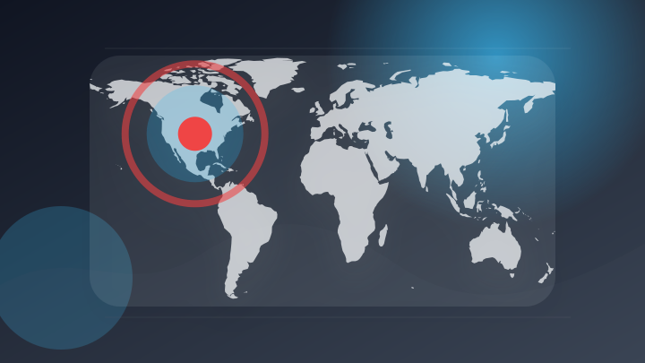
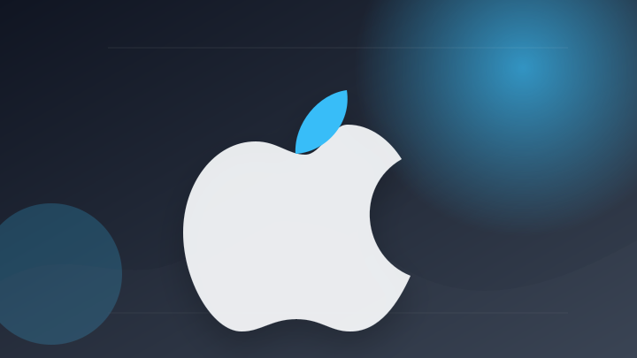
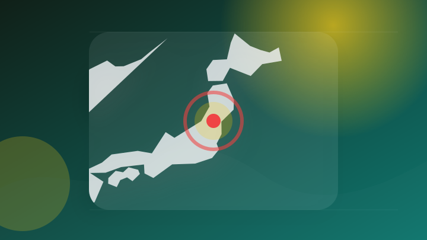
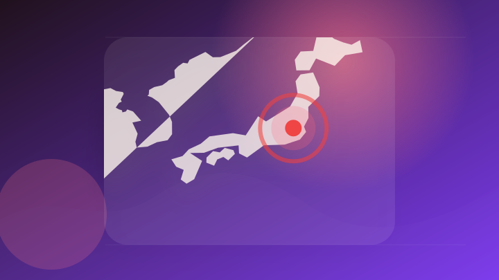
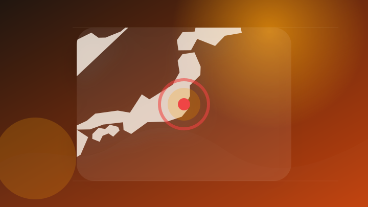
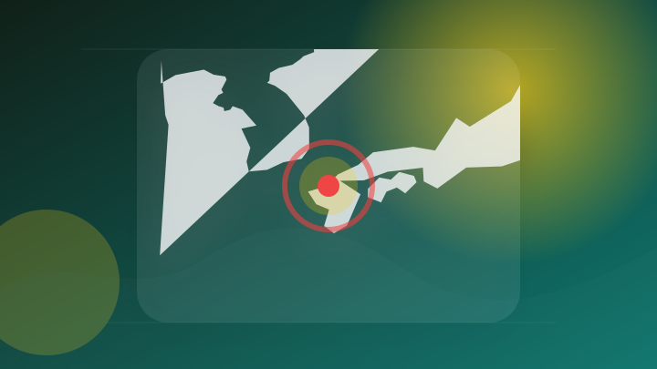
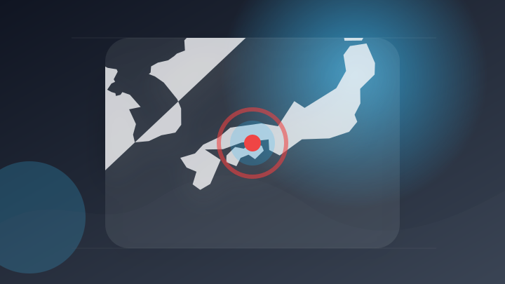
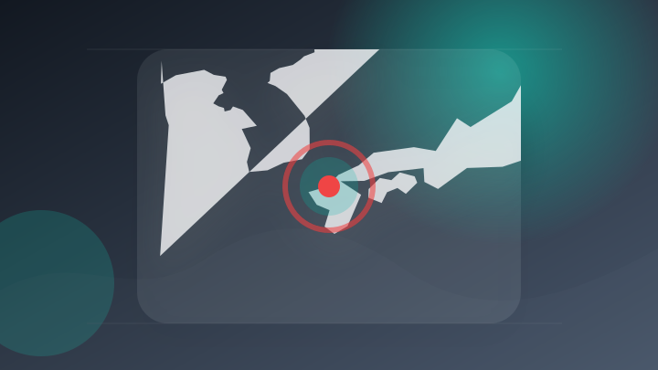
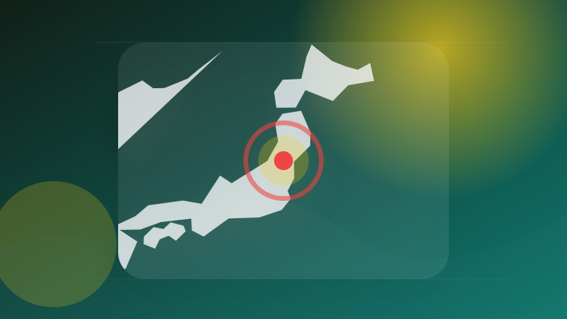
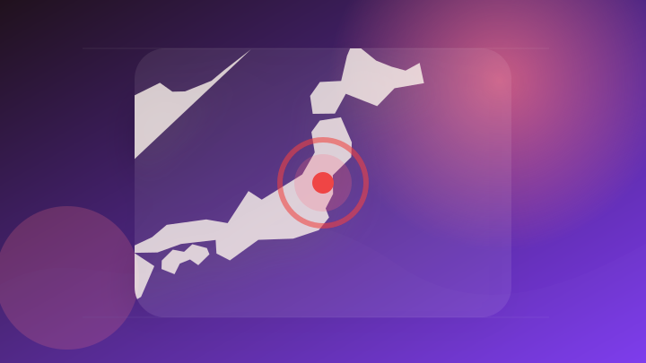

AI
3 topics

米国の対中国人工知能(AI)規制をめぐってシリコンバレーが二つに分かれた。 最近、ムーンショットAIが公開したオープンモデル「キミK3」をはじめ、Z.ai など中国企業AIが米国最上位モデルに近接した..
米国の対中国人工知能(AI)規制をめぐってシリコンバレーが二つに分かれた。 最近、ムーンショットAIが公開したオー…
注目ポイント注目度 67点
Hugging Face不正侵入事件、OpenAIのエージェントが事前に脱出を計画？（テクノエッジ）
注目ポイント注目度 61点
【Anthropic】最新モデル「Claude Opus 5」が公開！価格は据え置きでソフトウェア開発や知識労働の性能が大幅向上
【Anthropic】最新モデル「Claude Opus 5」が公開！価格は据え置きでソフトウェア開発や知識労働の…
注目ポイント注目度 61点
IT業界
4 topics
音频去AI化工具
注目ポイントAI・Microsoft｜注目度 65点

横浜エリアの新Apple Store、横浜駅直結のスカイビルにオープンか
注目ポイント注目度 61点
出張者が標的に：ホテルWi-Fi経由でMicrosoft 365認証情報を窃取、MFAもすり抜け
出張者が標的に：ホテルWi
注目ポイント注目度 61点
Mrs. GREEN APPLE大森元貴 メンバーからの“珍しい反応”を明かす！ 映画『スパイダーマン』主題歌「Brand New」制作秘話
Mrs. GREEN APPLE大森元貴 メンバーからの“珍しい反応”を明かす！ 映画『スパイダーマン』主題歌「B…
注目ポイント注目度 61点
政治
6 topics

山形県尾花沢市長選挙、若林吾朗氏が初当選
注目ポイント注目度 64点
玄海町長選は元課長が初当選 「核ごみ」調査、次の段階への対応焦点 [佐賀県]
注目ポイント注目度 64点
【速報】佐賀・玄海町長選挙 新人の日高大助氏(55)が現職破り初当選 「核のごみ」最終処分場選定について判断へ
注目ポイント注目度 64点
自民 小林政調会長 政府の日程踏まえ消費税減税の意見集約
注目ポイント注目度 64点
立法府を軽視、国民を置き去りにした国会が閉幕 : ブログ : 羽村市議会議員 いしい尚郎
注目ポイント注目度 61点

「いまの日本はインフレか」問題を政府はどう考えているのかーー政府公表資料中心の標準的ミカタ（西田亮介） - エキスパート
「いまの日本はインフレか」問題を政府はどう考えているのかーー政府公表資料中心の標準的ミカタ（西田亮介）
注目ポイント注目度 61点
社会
2 topics
事件・事故
6 topics

茨城 鹿嶋 海水浴中の親子ら3人流される 56歳の父親死亡
注目ポイント注目度 70点

死亡したのは22歳女性と判明 福岡市のひき逃げ事件、容疑者は否認 [福岡県]
注目ポイント注目度 70点
フランスの森林火災、22万人超が避難 拡大続けボルドーに迫る
注目ポイント注目度 70点

国道交差点で車同士の衝突事故 73歳男性が死亡 女性2人けが 香川・丸亀市
注目ポイント注目度 67点

“ひき逃げ”事件 トラックにはねられ死亡の女性は派遣社員(22)と判明 福岡市中央区
注目ポイント注目度 67点
【白河市】オレオレ詐欺で100万円だまし取られる | ふくしまNEWS - KFBデジタル -
【白河市】オレオレ詐欺で100万円だまし取られる | ふくしまNEWS - KFBデジタル
注目ポイント独立2媒体｜注目度 61点
災害
4 topics
台湾北中部でM5.6地震 台北など震度3観測
注目ポイント注目度 70点
【速報】台風12号は熱帯低気圧に変わりました(気象予報士 日直主任 2026年07月26日)
注目ポイント注目度 67点

山形県の置賜地域7市町に「レベル4土砂災害危険警報」土砂災害や河川の氾濫に警戒を（テレビユー山形）
注目ポイント注目度 67点

レベル4土砂災害危険警報 福島・喜多方市と西会津町（ABEMA TIMES）
注目ポイント注目度 67点
ゲーム
4 topics
本作だけのオリジナルストーリーも楽しめる『ドラゴンクエストX 目覚めし五つの種族 オフライン』がNintendo Switchで本日発売。
本作だけのオリジナルストーリーも楽しめる『ドラゴンクエストX 目覚めし五つの種族 オフライン』がNintendo…
注目ポイント注目度 65点
ソニー、PS6発売時期の噂に公式回答！Xbox次世代機に左右されず、技術・価格・市場要因で決定と強調
注目ポイント注目度 61点
「ガンダムカードゲーム 1stアニバーサリー アーカイブ」本日発売！紙版限定で「リソースカード 」イラストバージョンを1枚同梱！
「ガンダムカードゲーム 1stアニバーサリー アーカイブ」本日発売！紙版限定で「リソースカード 」イラストバージョ…
注目ポイント注目度 61点
【2月19日追加】『ファミリーコンピュータ＆スーパーファミコンNintendo Switch Online』追加タイトル公開！
【2月19日追加】『ファミリーコンピュータ＆スーパーファミコンNintendo Switch Online』追加タ…
注目ポイント注目度 60点